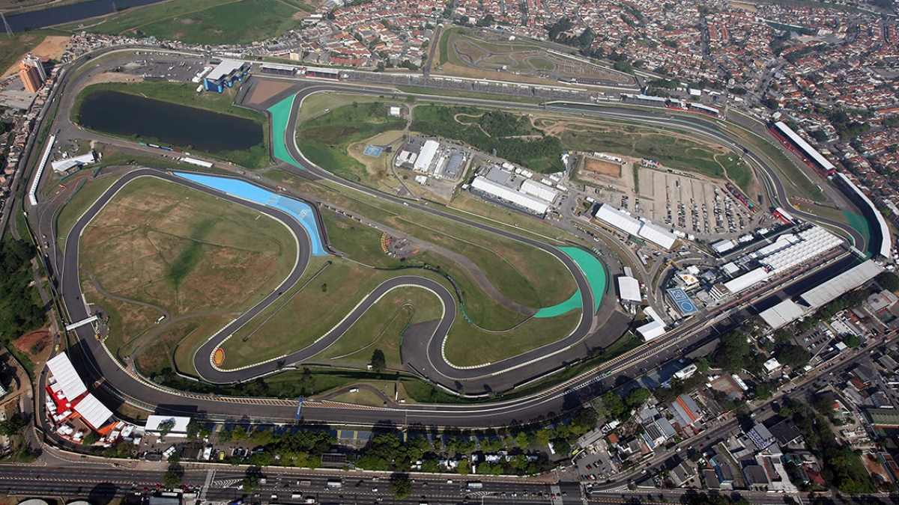
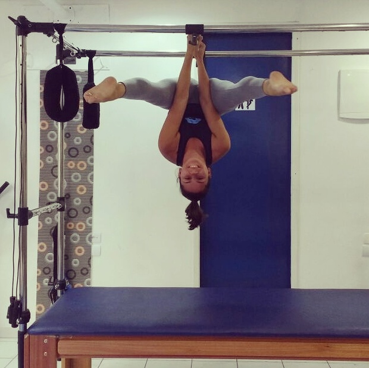
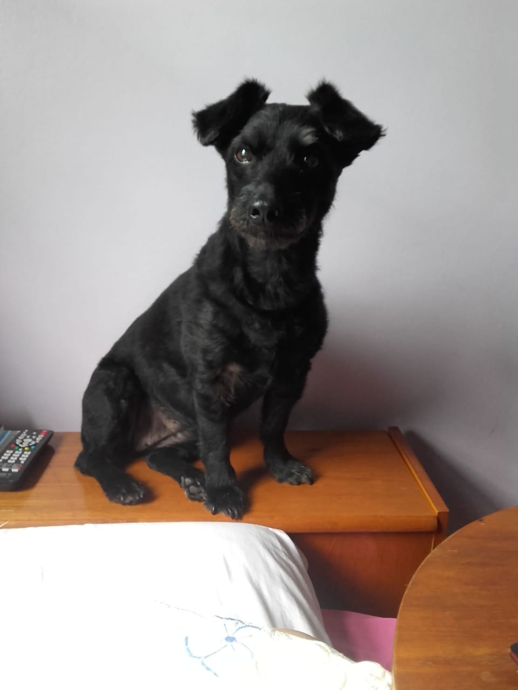
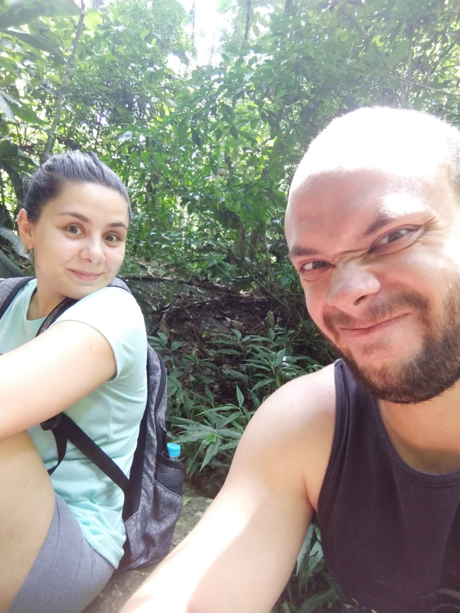

Natallia Bonadia
Minha história
Nasci em São Paulo, em 1988. Sempre morei em Interlagos, próximo ao Autódromo.
Apaixonada por atividade física desde pequena, decidi fazer faculdade de Esporte e em 2010 passei no vestibular na USP.
Durante o curso fiz estágio em clube com modalidades esportivas coletivas e individuais e também na área administrativa.
Me formei em 2013 e apesar de ter trabalhado um pouco como técnica de voleibol e professora de Pilates, sempre gostei de atuar na área administrativa, mas nunca deixei a atividade física de lado.
Trabalhei como coordenadora de um Studio de Pilates e gerente de uma Academia.
Hoje, estudo o Mercado Financeiro e faço curso de Web Full-Stack na Let's Code. Com isso, pretendo trabalhar com desenvolvimento de sites e sistemas em breve.
Tenho uma filha canina de 14 aninhos e um namorado que acompanha minhas loucuras e aventuras.
 